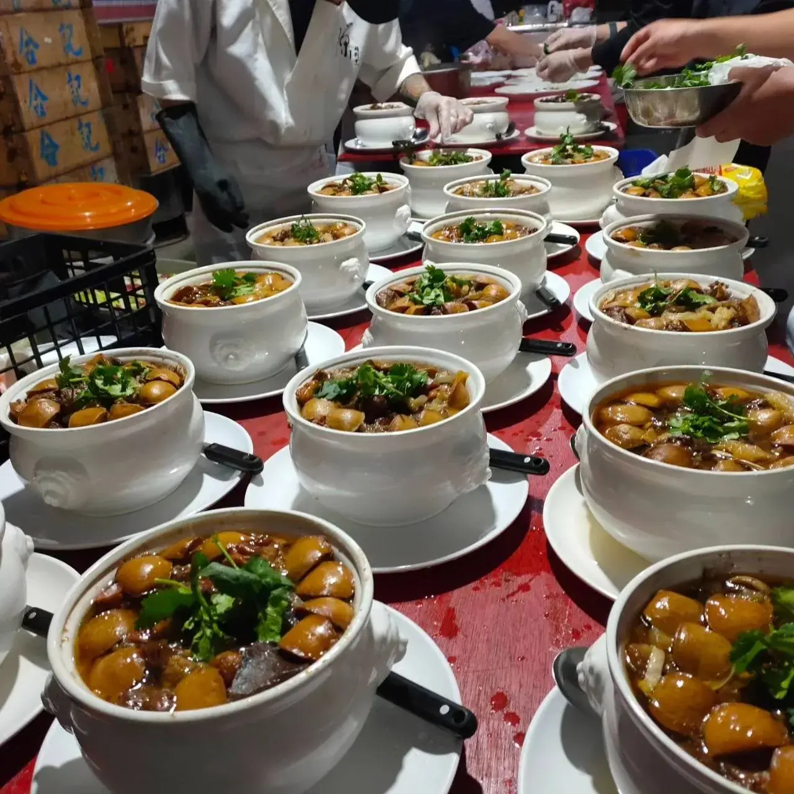

辦桌菜色怎麼配？
Taiwanese Banquet Dishes Guide
重點摘要：辦桌菜色怎麼配？整理傳統辦桌的上菜結構、冷盤選法、常見菜名與吉祥寓意，以及古早味與現代辦桌的差別，並說明喜宴、壽宴、入厝的選菜重點。
辦桌菜色的基本結構
傳統辦桌以「桌」為單位，一桌通常 10–12 人，菜色 10 道以上。上菜順序大致是：冷盤開場，接著海鮮熱菜、燉湯與肉類主菜，最後以主食、甜湯與水果收尾。完整的 10 道菜順序與桌數估算，可以參考辦桌菜單範例。
辦桌冷盤怎麼選
冷盤是整桌的第一印象，通常以拼盤形式出現，重點是色彩豐富、口味清爽，替後面的熱菜暖場。選擇時可以留意三件事：
第一，葷素與口感要有變化，避免整盤都是相近的風味；第二，優先選擇上桌後仍能維持品質的品項，因為冷盤通常最早備好、最早上桌；第三，賓客有長輩或孩童時，多安排軟嫩、容易入口的內容。
夏天的場合，冷盤可以偏重涼拌與清爽的海鮮；天氣較冷時，則可以搭配滷味與熟食，讓整桌開場不顯得單調。
常見辦桌菜名與吉祥寓意
辦桌的每一道菜多半有吉祥的說法，以下是常見的傳統寓意，實際說法會因地區與家族習慣略有不同：
全魚（清蒸或紅燒）：象徵年年有餘，通常安排在中段主菜。
長壽麵：壽宴常見，象徵長壽，也常作為主食收尾。
佛跳牆：燉湯的代表，象徵福氣滿滿。
全雞或烤鴨：雞與「吉」諧音，是肉類主菜的重頭戲，常見於喜慶場合。
蝦類料理：色澤紅潤、氣氛喜氣，多安排在海鮮熱菜。
油飯：喜慶宴席常見的主食，帶有吉慶的意思。
甜湯或湯圓：象徵圓滿與團圓，為正餐收尾。
古早味辦桌與現代辦桌的差別
古早味辦桌指的是延續總舖師傳統的做法：現場開伙、現炒熱菜，重視鑊氣與豐盛的份量。現代辦桌則在保留這套流程的同時，加強擺盤、食材規格與衛生標準。
舒苑的辦桌服務保留傳統流程，由主廚團隊到場架設爐具現炒。主廚林東立也曾受邀參與桃園閩南文化節的「總舖師辦桌」活動，以桃園在地食材完成共十道菜的完整辦桌，媒體報導可參考媒體報導。
依場合選菜的重點
喜宴、壽宴與入厝的流程相近，差異在寓意與賓客組成：喜宴重視喜氣、豐盛與團圓的意象；壽宴常見長壽麵與壽桃，賓客以長輩居多，建議選擇軟嫩、清爽、好咀嚼的菜色；入厝宴重視圓滿與團聚，常搭配甜湯或湯圓。尾牙與企業聚會則要留意人數變動與上菜速度，菜名也可以挑選討吉利的說法。
預約前先準備的資訊
辦桌以桌為單位，可用賓客人數除以 10 至 12 估算桌數。預約前建議先整理：日期與時間、預估桌數、場合類型、預算範圍、賓客的飲食限制（如素食、海鮮過敏、長輩口味），以及場地類型（室內、戶外、社區中庭）。資訊越完整，菜單與報價就越準確。想了解不同人數的規劃，可以看20 人辦桌菜單方案與30 人以上聚餐菜單。
延伸閱讀
常見問題
辦桌一桌通常幾人、有幾道菜？
傳統辦桌一桌通常為 10–12 人，菜色 10 道以上：由冷盤開場，經過海鮮熱菜、燉湯與肉類主菜，再以主食、甜湯與水果收尾。
辦桌冷盤通常有哪些？
冷盤通常以拼盤形式開場，常見以海鮮、滷味與涼拌類組成，重點是色彩豐富、口味清爽。實際內容會依場合、季節與主廚安排調整。
古早味辦桌菜單有什麼特色？
古早味辦桌延續總舖師傳統：現場開伙、現炒熱菜，重視鑊氣與豐盛份量。舒苑保留這套流程，並由主廚團隊到場架設爐具現炒。
辦桌菜色可以客製化嗎？
可以。可依場合、飲食禁忌（如素食、海鮮過敏）與預算調整，詳見客製化菜單設計。
想進一步了解嗎？
提供活動日期、人數與場地，我們將提供最適合的私廚方案與報價建議。